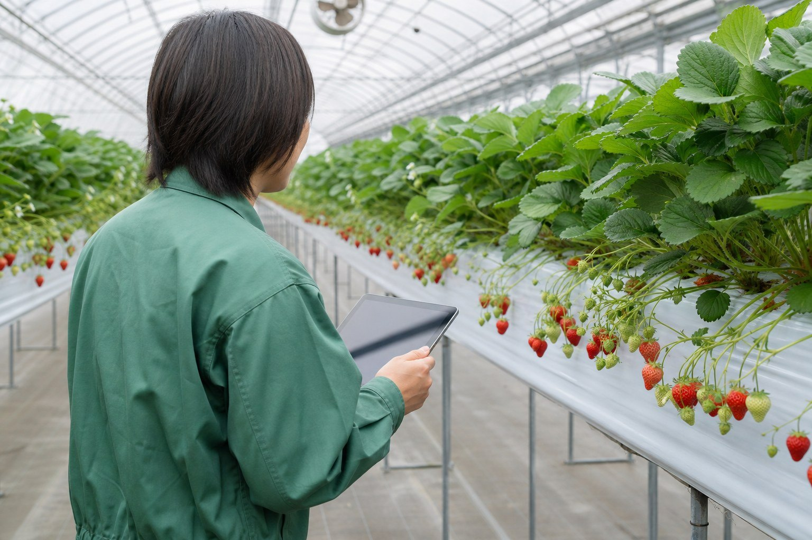
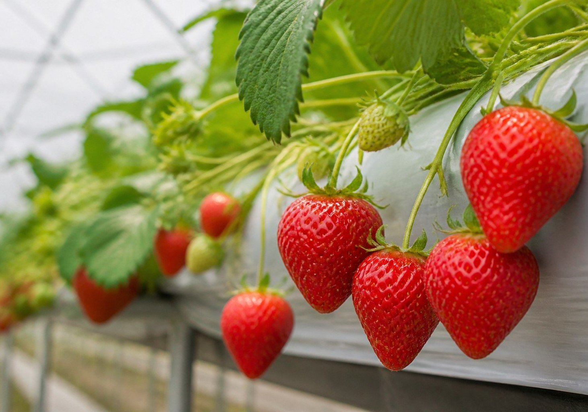
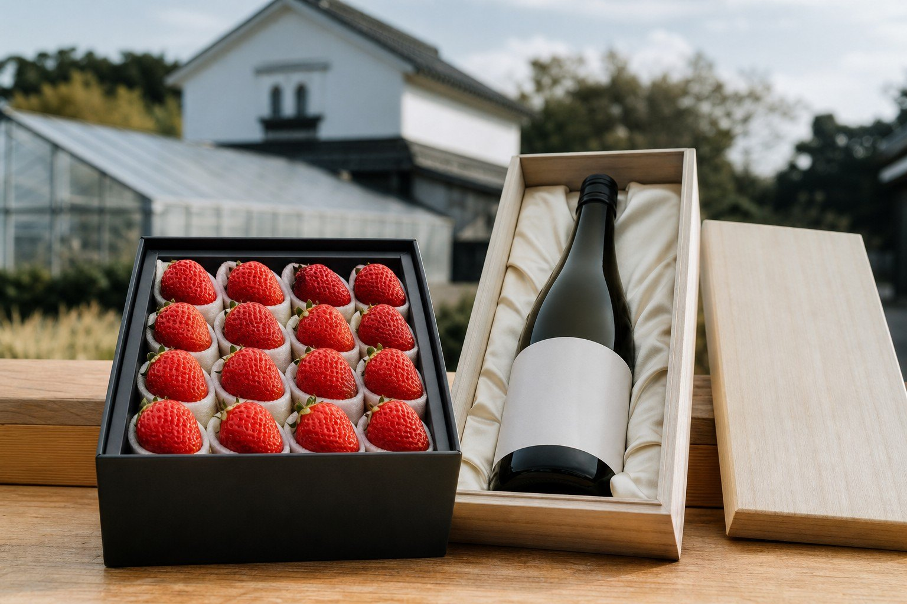

MODEL 01
農ビス／FDE
- 概要
- 全国の農家が持つ職人の判断を、音声対話でデータ化する
- 収益モデル
- データ獲得を優先し、月額数万円の価格で普及させる
- 到達目標
- 数千〜数万農園規模のデータ基盤


Smart Agriculture02 ／ 農業事業
職人の判断をデータ化し、生産から販売まで、産地と企業をつなぐ事業を展開します。
Smart Agriculture農業事業の3つの事業モデル
MODEL 01
MODEL 02
MODEL 03
事業間の連携モデル3企業参入支援で接点を獲得モデル2パッケージ導入モデル1月額運用
Smart Agriculture事業モデルの紹介

MODEL01
MODEL 0101 / 03
作業中の会話から、職人の判断とその理由をデータとして蓄積します。
作業しながら話すだけで、その日の記録が残る
AIが判断の理由を聞き返し、根拠ごとデータにする
大規模な農業法人には、エンジニアが現場で判断を言語化する
収益モデル月額数万円
到達目標数千〜数万農園

MODEL02
MODEL 0202 / 03
提携農業法人と共同で、供給の少ない時期・地域に高単価の作物を生産します。
沖縄・インドネシアで、高温でも甘いイチゴを栽培する
国内では生産者の少ないバニラを生産する
1シーズンの数字を確定し、別拠点の1棟で再現する
収益モデル高単価販売
到達目標別拠点での再現

MODEL03
MODEL 0303 / 03
農業に参入する企業を、事業設計から販売の立ち上げまで支援します。
作物・地域・販路から逆算して、事業を設計する
栽培管理と記録の仕組みを導入する
ブランドづくりと販路の開拓まで支援する
収益モデルコンサルティング
展開モデル2・モデル1へ
CaseFDE・受託開発の事例


生育の判断が経営者に集中し、指導できる人材を増やせない。写真による生育確認だけで月100時間を費やしていた。
アグリテック企業と連携し、熟練者の判断基準を言語化。スマートフォンで撮った写真からAIが生育を判定し、指導員が補正できる仕組みを開発している。
沖縄県の事業に採択され開発中。提携先と農業WEEK 2026に共同出展し、約70件の引き合いを獲得した。確認工数を月100時間から20時間へ減らし、他の産地へ展開する。